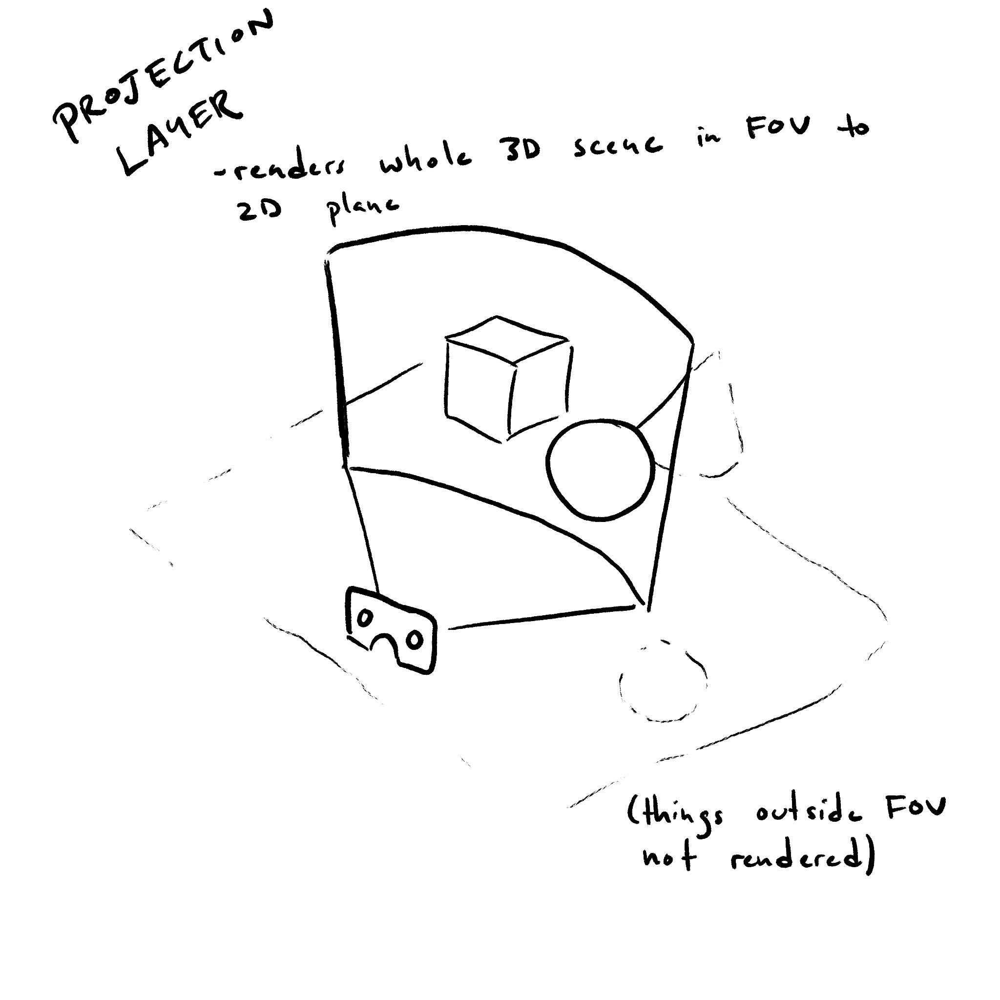
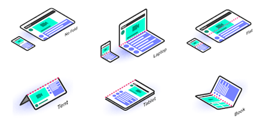

December@VirtualW3C: #accessibility events, etc. https://www.w3.org/participate/eventscal.html
3 Dec.: on the #InternationalDayofPersonsWithDisability, @sabouzah speaks at the @breadandnet 2020nline @SMEX #accessibility #WCAG https://breadnet2020a.sched.com/event/ffpO
"The Arabic region accessible for people with disabilities" - المحتوى العربي في متناول الأشخاص ذوي الاحتياجات الخاصة
https://twitter.com/w3cdevs/status/13337453963137064964 Dec.: @sabouzah is one of the panelist @breadandnet 2020nline to discuss digital @inclusion in the Middle East and Northern Africa - https://breadnet2020a.sched.com/event/fbV8/lshmwly-lrqmy-fy-mntq-lshrq-lwst-wshml-fryqy-lywm-wgdan -الشمولية الرقمية في منطقة الشرق الأوسط وشمال إفريقيا: اليوم وغدًا
https://twitter.com/w3cdevs/status/133374539954750669011 Dec.: @OZeWAI virtual conference, @sabouzah presents #Accessibility Conformance Testing (ACT) - https://ozewai.org/conference/ #a11y #OZeWAI #Australian
https://twitter.com/w3cdevs/status/1333745401162330112More #w3cTPAC breakouts 🎬 recordings about designing better #WebApps:
1) "Cloud #gaming on the Web" - to discuss Web technologies when serving cloud gaming - https://youtu.be/TCKMA5vsOHg
2) "Memory copies & zero-copy operations on the Web" - to identify possible architectural updates to the #WebPlatform and reduce unneeded memory copies - https://youtu.be/lZW9zvdqnyw (see also slides at https://www.w3.org/2020/Talks/TPAC/unconference/zerocopy.pdf)
https://twitter.com/w3cdevs/status/1333798092190093318@w3cx https://twitter.com/w3c_wai/status/1334135124871491587
https://twitter.com/w3cdevs/status/1334139778158252033We have 🎬 recordings of these great Web & Ethics #w3cTPAC breakout sessions curated and moderated by @laurenleemack 🙏:
1) "Creative Imagination for an #ethical #Web" https://youtu.be/US_ANp2lDwg - towards a vision of the future Web that is more ethical, equitable, and inclusive
2) "Accessing #WebXR Through Art" https://youtu.be/TLCfriCoD2k - using WebVR to connect art students and their studio practices in a remote-learning context, for example
https://twitter.com/w3cdevs/status/13341540045705175053) "Consent Communication on the Web" https://youtu.be/qoGGstzydMc - incl. discussions around #accessibility and cultural implications of #internationalization #i18n, and many more.
https://twitter.com/w3cdevs/status/1334154008261517312Congrats and welcome! https://twitter.com/igalia/status/1334233024360308739
https://twitter.com/w3cdevs/status/1334411785248641024Another specification from @ImmersiveWebW3C - WebXR Layers bring performance and legibility to #WebXR composition https://twitter.com/w3c/status/1334403511581335552
See the explainer that gives a gentle intro to the spec at https://github.com/immersive-web/layers/blob/master/explainer.md
https://twitter.com/w3cdevs/status/1334500501556244480See it in action in this demo by @Lady_Ada_King she built for #w3cTPAC https://youtu.be/dssQSeTrqPI?list=PLNhYw8KaLq2UgIz02fSX-rZRg7pCgxv0R&t=225
https://twitter.com/w3cdevs/status/1334500509449859078The feature is available experimentally in the @Oculus_Dev browser if you want to try it out
https://twitter.com/w3cdevs/status/13345005113667338292) "#OnlineHarms - a European and UK perspective", incl. #ChildSafety and the role of standards - https://youtu.be/RiktfnJNfUM (slides: https://lists.w3.org/Archives/Public/www-archive/2020Oct/att-0006/Online_Harms_for_W3C_-_1.0.pdf)
More Web & Ethics breakout sessions at #w3cTPAC were 🎬 recorded - check them out:
1) "Innovative Adaptation, #Personalization and #AssistiveTechnology " - https://youtu.be/uu4HG2WdtAc (slides: http://matatk.agrip.org.uk/talks/2020/innovative-adaptations/)
https://twitter.com/w3cdevs/status/13345162707803463713) "The Responsible use of #GeoSpatial Data" - https://youtu.be/rLD2iKE6yqg (slides: https://lists.w3.org/Archives/Public/www-archive/2020Nov/att-0002/Responsible_Geo_-_W3C.pdf)
https://twitter.com/w3cdevs/status/1334516272671952908This able provides info about the #orthographic and #typographic characteristics of a number of #languages. Check it online at https://r12a.github.io/scripts/featurelist/ https://twitter.com/r12a/status/1335847878883938305
https://twitter.com/w3cdevs/status/1335876744298057733Wayne Chang @wycdd (@sprucesystems), Amy Guy (@digitalbazaar), Don Marti @dmarti (@CafeMedia_), Jordan Mitchell @kickstand (@iabtechlab),
🗳️ Election time for the @tag!
Four seats are up for election and nine people have been
nominated as candidates. They are:
https://twitter.com/w3cdevs/status/1336266705157369859The @w3c membership elects the @w3ctag members. The election is open until 6 January 2021.
https://twitter.com/w3cdevs/status/957974903122219008
https://twitter.com/w3cdevs/status/1336266710077333505The nine candidates have posted statements about their candidatures, describing their aspirations on the role of the @tag and their specific impact on it: https://www.w3.org/2020/12/07-tag-nominations
https://twitter.com/w3cdevs/status/1336266708512870400Sangwhan Moon @sangwhanmoon (W3C #InvitedExpert nominated by @intel), Theresa O'Connor @hober (@Apple), Martin Thomson (@mozilla), Lea Verou @LeaVerou (W3C #InvitedExpert nominated by @openjs) and Jeffrey Yasskin @jyasskin (@Google).
https://twitter.com/w3cdevs/status/1336266707028111362More 🎬 recordings of #w3cTPAC breakout sessions related to Web and Components:
1) "#CSS Module Scrips", to reach consensus on the minimal semantics - https://youtu.be/0WJjBEz95rQ
2) "Parts and Template Instantiation", to make progress on the #APIs proposal to help instantiate templates - https://youtu.be/f5sSufK5TCY
https://twitter.com/w3cdevs/status/13362830453520506913) "Declarative Shadow #DOM" - https://youtu.be/xY2rpHsaGlI
https://twitter.com/w3cdevs/status/1336283049491902464One last 🎬 recording of a #w3cTPAC breakout session is now available: "Learning from #MiniApps" or what Web #developers can learn from mini apps and their developer experience - https://youtu.be/6DT4yZL1GLQ (slides at https://goo.gle/learning-from-mini-apps)
... and its companion presentation "MiniApps standardization" - https://youtu.be/zNLCOPKou_Y
https://twitter.com/w3cdevs/status/1336713514111660033The recently published @w3c Audiobooks #WebStandard has been translated into Japanese: http://www.asahi-net.or.jp/~ax2s-kmtn/internet/publishing/REC-audiobooks-20201110.html Thank you @omnidirect ! #audiobooks #html5j #dotHTML5 #w3c_keio #translation https://twitter.com/omnidirect/status/1336266224951422976
https://twitter.com/w3cdevs/status/1336977345337565184🎬 @wendy_a_reid presents the #Inclusion and #Diversity efforts in @w3c, via the PWE (Positive Work Environment) and the ID (Inclusion and Diversity) #CommunityGroups - https://youtu.be/pJ7BdntqGEw
This is an update of the work status and future plans presented last May by @TzviyaSiegman:
https://twitter.com/w3cdevs/status/1284117061300563971
https://twitter.com/w3cdevs/status/1337088739940704256.@wseltzer dives in particular on the role of the Privacy Community Group which was launched in January this year and has already been incubating 5 proposed approaches to reduce tracking https://privacycg.github.io/charter.html#work-items
There has been a lot of recent exploration around strengthening #privacy on the Web in the past few years. In her #w3cTPAC presentation @wseltzer gives an overview of the related work in @w3c https://www.w3.org/2020/10/TPAC/talk/Privacy#talk https://www.youtube.com/watch?v=YWaDiSJXIaw
https://twitter.com/w3cdevs/status/1337418645497139204This has been a rich source of exploration in 2020, and 2021 promises to bring more of the same - watch this space! https://www.youtube.com/watch?v=YWaDiSJXIaw
https://twitter.com/w3cdevs/status/1337418650366717954And to ensure broad adoption of the principles needed for built-in privacy across @w3c specifications, the Privacy Interest Group (aka PING) is responsible for reviewing these as they progress on their standardization journey https://www.w3.org/2019/privacy/
https://twitter.com/w3cdevs/status/1337418648781283328The complementary "Improving Web Advertising" Business Group focuses on ideas and proposals to improve the balance of needs in the #advertising ecosystem between users, advertisers, publishers, distributors, ad networks, agencies, … https://github.com/w3c/web-advertising#web-advertising-business-group-repository
https://twitter.com/w3cdevs/status/1337418647048957953During #w3cTPAC, @frivoal, member of the @w3cAB, presented the directions of evolution for @w3c's Process Document in 2021: https://youtu.be/oegGUDiQwgo
As a reminder, the 2020 edition of the governing document of W3C standardization activity came into operation last September: https://www.w3.org/Consortium/Process/
https://twitter.com/w3cdevs/status/1305877270691807234
https://twitter.com/w3cdevs/status/1338515804384600070For 2021, revisions of the Process are developed in the #w3c Process #CommunityGroup (https://github.com/w3c/w3process), which is open to anyone. Among many of these revisions, @frivoal presented two topics for Process 2021: registries and tooling
https://twitter.com/w3cdevs/status/1338515808171986946If you want to help shape @w3c's standardization modus operandi, please contribute to the #github repo: https://github.com/w3c/w3process
https://twitter.com/w3cdevs/status/13385158133813207042) As groups are using different tools to suit their needs, there is a demand to both document #BestPractices and write down guidelines to help discoverability, longevity, etc. as well as to meet #accessibility and #internationalization requirements https://www.w3.org/wiki/W3C_Tooling_Policy
https://twitter.com/w3cdevs/status/13385158115609845781) For registries, a proposal is to make them ‘first class’ deliverables on https://www.w3.org/TR/, referenced by W3C #URLs, with a process for defining, publishing, and maintaining one in the Process document
https://twitter.com/w3cdevs/status/1338515809883332608W3C’s training activities @w3cx have reached a significant milestone! A big thank you to all our learners whether they are entering the job market, changing fields, seeking a promotion or explore new interests! #HTML5 #CSS #JavaScript #a11y @micbuffa
https://w3cx.org https://twitter.com/w3c/status/1338853607983210496
https://twitter.com/w3cdevs/status/1338857435050602498To understand better why and how @W3C conducts #privacy reviews of its specs, and similarly #accessibility , #I18N internationalization and #security reviews, watch what @ralphsw27 and Sam Weiler shared on the topic for #w3cTPAC https://www.w3.org/2020/10/TPAC/talk/HorizontalReview https://www.youtube.com/watch?v=aqyoIifllj0 https://twitter.com/w3cdevs/status/1337418648781283328
https://twitter.com/w3cdevs/status/1339191402270429189New types of mobile devices (phone and laptop segments) have the ability to fold the screen in some capacity. The Screen Fold #API allows Web #apps to request the angular value to which a device with a screen hinge is folded. https://www.w3.org/TR/screen-fold/ https://twitter.com/w3c/status/1339476945759838208
The main interest in knowing the fold angle reside in responsive design's interesting opportunities to enable new user experiences. The specification defines six posture modes: No-Fold, Laptop, Flat, Tent, Tablet and Book.
https://twitter.com/w3cdevs/status/1339481855184277504Contribute to the discussions on the Screen Fold #API #FirstPublicWorkingDraft on its #github repository: https://github.com/w3c/screen-fold/ #timetogiveinput
https://twitter.com/w3cdevs/status/1339481861559599106Yeah indeed! 🎊
A preliminary report was presented during a #w3cTPAC breakout session in October: https://twitter.com/w3cdevs/status/1328749016163770369 #mdnWebDNA https://twitter.com/MozDevNet/status/1339308367463002112
Browser compatibility remains the overarching theme of top pain points reported by #developers and #designers - which another report dived more into, as reported a few months ago
https://twitter.com/w3cdevs/status/1315682319747952640
https://twitter.com/w3cdevs/status/1339575577787985920Among the improvements in processing the results of the survey 2020 is a segmentation of the respondents based on the kind of top frustrations they experience: https://insights.developer.mozilla.org/reports/mdn-web-developer-needs-assessment-2020.html#needs-assessment-needs-segmentation
We're hoping this will help us take more focused remediation to these issues.
https://twitter.com/w3cdevs/status/1339575583618048001This year's survey, designed in collaboration with browser vendors and @w3c, was expanded to include new questions about accessibility tools and Web testing.
Read more in the full report: https://insights.developer.mozilla.org/reports/mdn-web-developer-needs-assessment-2020.html
https://twitter.com/w3cdevs/status/1339575585748774917